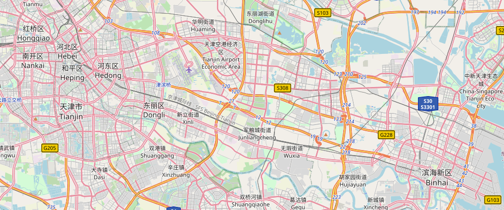

About this site
Why this exists
Run Tianjin is a small, independent guide to running in Tianjin — built by a local runner who wanted a clearer answer to a simple question: where should I run today?
It is written for beginners who want a friendly start, regular runners looking for low-stress routines, and anyone who cares about route quality, time of day, and safety rather than generic training advice.
How routes are chosen
-
1
Run it first
- Every route is run in person before it is listed.
- No route is added from a map alone.
-
2
Score five things
- Surface, lighting, access, crowding, and supplies.
- A route has to hold up on all five to make the list.
-
3
Check different hours
- Morning, evening, and weekend runs feel different.
- Lighting and crowd notes come from those visits.
-
4
Review monthly
- Routes are re-checked roughly once a month.
- Seasonal changes and closures get updated.
How each route scores
Every route is rated on the same five criteria. Filled dots are stronger; hollow dots are weaker. A route only makes the list if nothing scores below two.
Data and updates
Where the information comes from
Distances, surfaces, and timing notes come from running these routes in person between 2022 and 2025. Route pages are re-checked roughly once a month, and seasonal notes are updated when conditions change.
The GPX files in the gpx/ folder are reference tracks for planning, not
recorded GPS traces from these runs. Use them to preview a route in a map app, not as a
record of exact distance or pace.
What this guide cannot promise
Conditions change. Construction, weather, temporary closures, and event days can all affect a route after it has been reviewed. Treat every entry as a starting point and check the situation on the day.
This guide does not replace medical advice. If something hurts, stop and get it looked at.
Who writes this
A Tianjin runner. I ran these routes on the ground between 2022 and 2025.
Running started as something I loved, and it stayed that way through the years I trained seriously. Later it became a path toward a better school, and the training that came with that goal was heavier than my body could carry. Overuse injuries ended my competitive years earlier than I wanted.
I still run. On the days my injuries ease, I go out slowly — much slower than before — and that is enough. This site is what I wish I had when I was looking for somewhere to run in this city: honest notes about surface, light, and timing, written by someone who has been on the path.
This is an independent, non-commercial project. No sponsors, no affiliate links.
-
2022
Started running, mostly for the pleasure of it.
-
2023
Training became structured, and routes started to matter.
-
2024
Mileage climbed toward a school goal. More roads, more hours.
-
2025
Overuse injuries ended the competitive years. The notes stayed.
-
Now
Slow running when the body allows, and this guide kept up to date.
What this site does not do
- No custom training plans
- No gear reviews or affiliate links
- No race entries or event listings
One job only: tell you where to run in Tianjin today, and what to expect when you get there.
Where the routes are

Four routes, one city
Two along the Haihe, one in a south-city park, one out by the coast in Binhai. Open the map to see where each one starts.
Open the route map →Feedback
Write to us
Send a note about a route.
If a route note is out of date, a path is closed, or you know a better place to run in Tianjin, write it down here. Corrections are the most useful thing you can send.
Suggest a route
Corrections are useful. New routes are better. If you know a place worth running in Tianjin, send it with these five things and it can be checked on the ground.
- Name and start point — where the loop begins.
- Distance — roughly, in kilometres.
- Surface — asphalt, track, gravel, or mixed.
- Best time — morning, evening, or weekend.
- One honest catch — the thing a first-timer should know.
Use the form above and pick Suggest a new route. Nothing is published until it has been run in person.